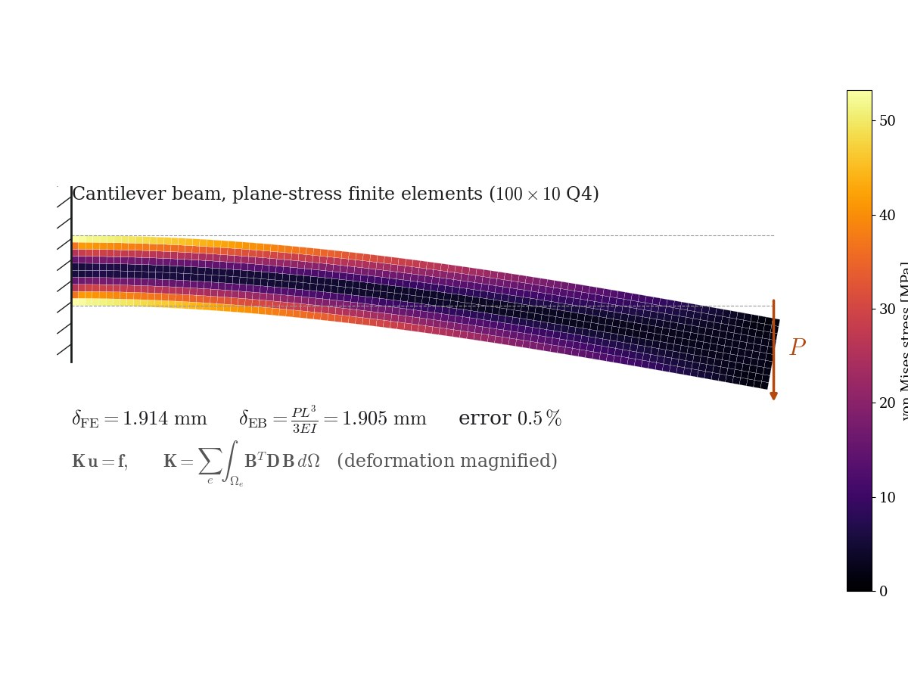

Projet personnel · Paris · oct. 2023 – févr. 2024
Analyse par éléments finis d'une structure chargée
AbaqusValidation sur solutions analytiquesCAO

Résumé
Un projet pour maîtriser l'analyse par éléments finis de bout en bout : modéliser une poutre chargée sous Abaqus, lancer des analyses statiques et dynamiques, et post-traiter flexion, contraintes et déformations. Chaque résultat a été comparé à la solution analytique de référence avant de faire confiance au modèle.
Côté expérimental
L'habitude que je garde de ce projet : avant tout modèle complexe, calculer un cas dont on connaît la réponse, mesurer l'erreur et raffiner le maillage jusqu'à la maîtriser. La figure ci-dessous reproduit l'idée avec un petit solveur en contraintes planes : la flèche en bout calculée par éléments finis est à 0,5 % de la valeur d'Euler–Bernoulli (le petit écart vient du cisaillement, que la théorie des poutres néglige).
Méthode et équations
Système éléments finis et raideur élémentaire :
$$\mathbf{K}\,\mathbf{u}=\mathbf{f},\qquad \mathbf{K}=\sum_e\int_{\Omega_e}\mathbf{B}^{T}\mathbf{D}\,\mathbf{B}\,d\Omega$$Références analytiques pour une poutre console de longueur \(L\), de rigidité en flexion \(EI\), chargée en bout par \(P\) :
$$\delta_{\text{tip}}=\frac{PL^{3}}{3EI},\qquad \sigma_{\max}=\frac{PL\,(h/2)}{I},\qquad \omega_n=\beta_n^{2}\sqrt{\frac{EI}{\rho A L^{4}}},\ \ \beta_1L\approx1.875$$